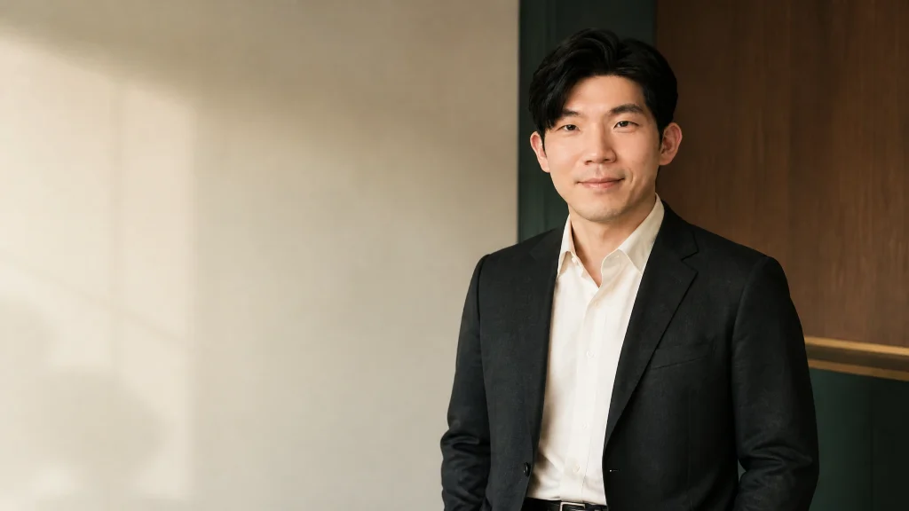

2016 – 2018수산업 무역
국경을 넘는 거래부터
일본·러시아·베트남·미국·캐나다를 상대로 연 53억 원 규모의 수산물 무역을 맡았습니다. 국제무역사 1급.
무역에서 시작해 퍼포먼스 마케팅, 스타트업 사업기획·R&D를 거쳐 지금은 금융·M&A·기업자문을 합니다. 10년 동안 다섯 번 자리를 옮기며 배운 것으로, 회사의 경영과 대표·가족의 재무를 함께 자문합니다.
박동혁Entrepreneurial Advisor · 중소기업경영연구소 전문위원 · 씨오㈜ M&A 파트너 · 한국AI기술협회 R&D 기술교류위원장 · Authentic금융그룹(AFG)

무역 → 광고 에이전시 → 스타트업 인하우스 → 사업기획·R&D → 금융·M&A·컨설팅. 분야는 달라졌지만 한 가지는 같았습니다. 구조로 매출을 만드는 일. 포트폴리오 전체 보기 ↗
일본·러시아·베트남·미국·캐나다를 상대로 연 53억 원 규모의 수산물 무역을 맡았습니다. 국제무역사 1급.
광고 에이전시 이엠넷과 스타트업 인하우스에서 밀리의서재, 삼천리자전거, LS엠트론, 패스오더, 웨딩북 등의 캠페인을 운영했습니다. 월 50만 원부터 3억 원까지의 광고비를 다뤘고, 카카오 비즈보드 런칭 당일 집행 사례는 카카오 공식 성공사례로 실렸습니다.
하우투메리·투알컴퍼니 선임연구원으로 정부지원사업 사업계획서, 기업부설연구소 운영, 노코드 MVP 제작을 맡았습니다. 회사는 2024 부산 우수창업기술기업(밀리언클럽), 이노비즈·벤처 인증을 받았고, 2025 스마트서비스 지원사업에 선정되었습니다. 웨딩북 베트남의 서비스 개편과 마케팅 전략도 코칭했습니다.
코멘토 리드멘토(평점 4.7/5.0), 알파코, 데이원컴퍼니, 넥스트러너스 등에서 퍼포먼스 마케팅, 생성형 AI, 사업계획서, 노코드 MVP를 가르쳤습니다. 계룡건설, LS엠트론 등 기업 사내 코칭도 진행했습니다.
한국AI기술협회 R&D 기술교류위원장, 씨오㈜ M&A 파트너, 중소기업경영연구소 전문위원으로 기술 검증, 기업가치평가, 정부지원자금, 법인 컨설팅을 합니다. 지금은 Human MCP로 기업자문과 개인 종합금융을 함께 합니다.
서강대학교 커뮤니케이션학 학사
퇴직연금모집인 · 변액보험판매 · 펀드투자권유대행인
국제무역사 1급 · 검색광고마케터 1급 · GAIQ
2024 부산 우수창업기술기업 · 이노비즈 · 혁신성장 벤처인증
출처: 박동혁 포트폴리오 2026 (mattpark45.github.io/portfolio_2026). 캠페인 성과는 담당 광고주 계정의 운영 결과이며 증빙 링크는 포트폴리오에 있습니다.
광고비를 늘려서가 아니라 구조와 타이밍을 바꿔서 만든 결과입니다. 각 사례의 증빙 자료는 포트폴리오에서 볼 수 있습니다.
광고비는 4% 늘리는 데 그쳤고, 브랜드 인지도 순위는 5위에서 2위로 올랐습니다.
카카오 For Business 공식 성공사례로 실렸습니다.
패스오더 다운로드 비용 −63%, 6개월 방치된 웨딩북 캠페인을 원격으로 재정비해 설치당 비용 −60%.
대표의 고민은 회사 안에서 끝나지 않습니다. 회사의 세금은 가족의 재산이 되고, 회사의 성장은 대표의 은퇴 계획이 됩니다.
그래서 둘을 따로 상담하지 않습니다. 회사의 문제를 풀 때 대표 개인의 재무를 함께 보고, 개인의 재무를 설계할 때 회사의 단계를 함께 봅니다. 제가 할 수 있는 일은 직접 하고, 더 잘하는 전문가가 있으면 연결합니다.
각 기반에서 제가 직접 하는 일과, 조직의 공식 서비스, 협업 전문가가 하는 일을 구분해서 안내합니다.
(주)KFPC 중소기업경영연구소의 경영컨설팅·자산관리 부문 전문위원으로 활동합니다.
AFG의 승인된 업무환경에서 개인·법인 금융서비스를 제공합니다.
책이 아니라 현장에서 배운 것을 자문에 씁니다.
상담 전에 고객이 스스로 상황을 보도록 돕는 도구를 만듭니다.
고객에게는 한 사람이지만, 문제에 따라 다른 역할로 일합니다.
경영과제를 정리하고 해결 방법을 찾습니다.
생애 단계에 맞는 재무설계와 실행을 돕습니다.
투자와 거래의 기회를 발견하고 연결합니다.
사람·기업·기관을 이어 새로운 기회를 만듭니다.
매출로 이어지는 마케팅 구조를 설계합니다.
자문에 쓰는 도구를 직접 만들고 기업의 AI 도입을 돕습니다.
Risk Finding, Benefit Finding, Growth Finding. 지켜야 할 것, 놓치고 있는 것, 다음에 할 것을 같은 자리에서 봅니다. 이를 여섯 단계로 실행합니다.
현재 상황과 미래 목표를 듣습니다.
막을 수 있는 위험부터 막습니다.
세금·비용·구조를 다듬습니다.
회사와 자산이 자랄 길을 찾습니다.
승계·Exit·은퇴로 가치를 실현합니다.
정기 점검으로 계획을 이어갑니다.
신뢰는 경계를 분명히 할 때 생긴다고 믿습니다.
글은 블로그와 브런치에, 짧은 생각은 SNS에 남깁니다.
30분 동안 고민과 목표를 듣고, 도울 수 있는 일인지 솔직하게 말씀드립니다.